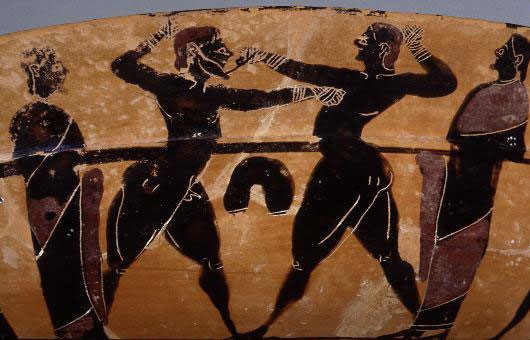
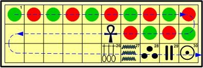
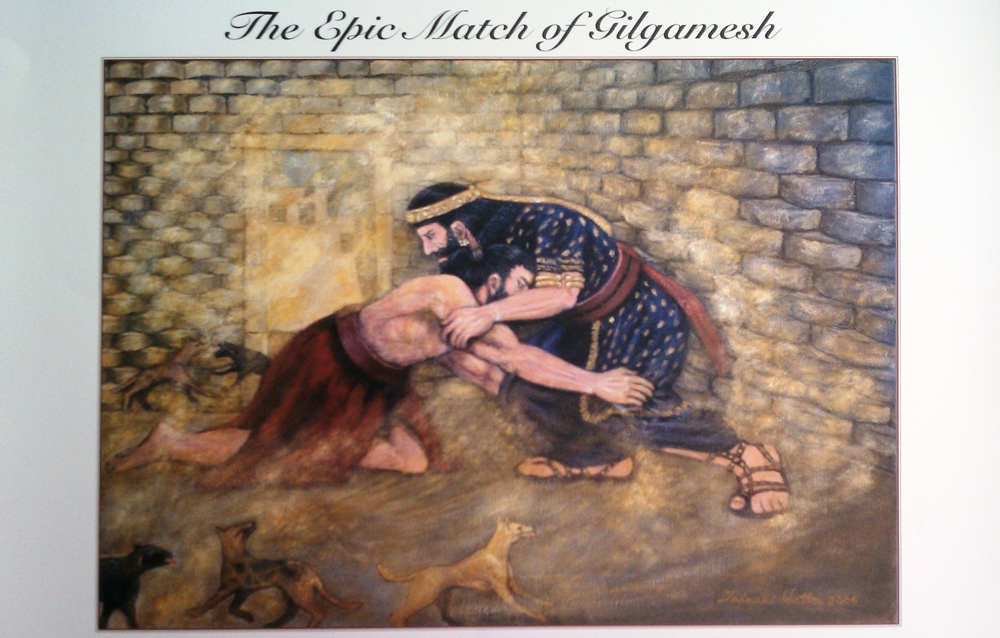
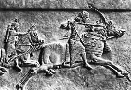
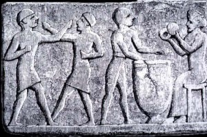
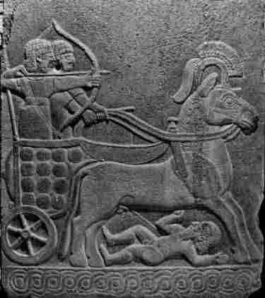

The Larger Significance of Ancient Sports and Recreation
by Alex Cullen
An especially intriguing component of culture is humanity’s innate fascination with various forms of “friendly,” but not always amicable, competition. There is no single or simple explanation for this penchant, except that it is strong and enduring. It is possible that we prefer the liberty of choosing and participating in such activities without the overhang of occupational requirements and other duties. Or, among other things, we might enjoy an environment where failure has less physical bearing on quality or security of life. In any case, as sports and games are shared, and as they evolve, they reflect cross-cultural integration. I argue that this phenomenon was just as evident in ancient Mesopotamia, although civilization’s perception of pastimes is now slightly different given that ties connecting recreation with religion, livelihood, and social stability are weaker today than in bygone eras.

Ancient Mesopotamian Sport
http://www.ancientmesopotamians.com/ancient-mesopotamia-games-sports-1.jpg
Board Games
A surprisingly effective means to track cultural spread lies in the patterns of game development. That is, we can find the recreational activities that people engaged in over time, visualizing how civilizations rubbed off on one another with regards to such activities. This is especially clear with board games, for it is quite simple to see how the structures of newly unearthed boards both resemble and differ from other found examples. Of course the specific game rules are often difficult to pinpoint, so it is quite possible to have identical boards with different regulations, but we are more or less able to see intrastate and interstate game evolution throughout Mesopotamia with the aid of game discovery.
Senet
Archaeologists have uncovered the ancient Egyptian game of Senet, which was composed of a three by ten square grid, with certain squares thought to represent “good” or “bad” scenarios affecting each player’s journey from the first to final square. The exact playing process is still somewhat mystifying, but Senet was well-liked among the Egyptians. Senet is, however, unusual in that other civilizations did not seem to adopt it with the same enthusiasm as the Egyptians; many experts theorize that because Senet became interwoven with Egyptian religion, other cultures were hesitant to accept it (Hoerth 486). Culturally, Egyptians beheld board games as a parallel for the twisting path through the afterlife, leading to their placement in tombs (“Game of Hounds and Jackals” par. 2). To conclude, Senet and other such games are dissimilar to modern board games, which are dissociated from the supernatural and hence do not impart the same sense of unease.

Senet
http://www.boardgamesoftheworld.com/jpegs/senet.jpg
The Royal Game of Ur
The Royal Game of Ur (also known as Tjau) was, like Senet, a “race game,” meaning that players began at a designated square and achieved victory by making it to the final square before competitors. There were twenty squares in total, three tetrahedral dice, and provisions for two players, who each used a set of seven markers (“Royal Game of Ur”). The earliest examples of the game board are traceable to the First Dynasty of Ur, distinguishing the Royal Game as one of the oldest known board games behind Senet. As was the case with Senet, the Royal Game held a certain religious connotation, seemingly confirmed by the game’s presence in tombs. In ancient Sumeria, it was believed that the deceased must face a spiritual being in the Royal Game before passage into the underworld (“Board Games History” par. 7). The playing procedure for the Royal Game is still somewhat obscure, but a later Babylonian tablet excavated by Irving Finkel of the British Museum hints at some plausible regulations (“Royal Game of Ur”). Over the course of its existence, the Royal Game underwent changes to grid shape and saw an expansion in gameplay from two to four players (Hoerth 487).
While rooted in Ur, the Royal Game proceeded to reach Palestine, Egypt, and even Cyprus and present-day Iran (Hoerth 487). Given its spiritual connection, one might wonder what caused the Royal Game to spread widely, whereas Senet remained localized in Egypt likely due to fear of its cultic significance. It is my hypothesis that since the Mesopotamians did not believe in dichotomous “good” and “bad” eternal destinies, perhaps they saw nothing ominous about a game that involved their deities, while mere superstition may have been enough to cause hesitance when it came to Egypt’s Senet.

The Royal Game of Ur
https://en.wikipedia.org/wiki/Royal_Game_of_Ur#/media/File:British_Museum_Royal_Game_of_Ur.jpg
Hounds and Jackals
Another cherished game, known today as Hounds and Jackals, relied on a still misunderstood arrangement of holes and pegs. It also originated in Egypt, but unlike Senet, it unmistakably did rise in popularity beyond Egypt’s borders. Hoerth hypothesizes that the game moved east into Mesopotamia via Syria-Palestine, where it received a modified violin-like board shape, and remnants with the same alteration were found as far north as Anatolia (Hoerth 486-487).
Game Significance
The purpose of the preceding section is not only to summarize a few well-known games, but to demonstrate how game development constituted a facet of societal interplay. When one culture introduced its games to another, new players imparted their own spin on the games while adopting their basic structure. Modifications to game boards and rules show uniqueness and originality, while the fact that games jumped the gap between cultures in the first place shows that people were willing to experiment with foreign traditions instead of rejecting all that was unknown. The noted exception was Senet, which conveyed trepidation on account of religious association, but the same phenomenon applies in the modern day, seen for example in the widespread existence of Pachisi in many regions of Asia (Finkel, ‘Pachisi in Arab Garb’).
Athletics
Now, I would like to highlight specific ways in which ancient athletics continue this trend and offer additional insight into the importance of recreational activities in Mesopotamian society, juxtaposing this with how sports function today. To begin with, sports such as wrestling, archery, boxing, and horseback riding predate even the ancient Greeks, according to Near Eastern discoveries (Fullagar par. 6). They are mentioned in texts scattered over the entirety of Mesopotamia, showing that they leaped from culture to culture in the same way as today’s major sports. For instance, the Sumerian Gilgamesh Epic portrays the man-to-man combat between Gilgamesh and Enkidu as resembling a wrestling match: “Enkidu barred the gate with his foot. They seized each other, they bent down like expert [wrestlers], they destroyed the doorpost, the wall shook” (Yamauchi 494). Likewise, the Israelite author of 2 Samuel possibly referred to a form of belt-wrestling (see below) in chapter 2, and the earlier book of Genesis gives an account of Jacob wrestling with an angel (Yamauchi 496).
From texts and other artistic renderings, it becomes apparent that wrestling was truly the universal sport among Mesopotamians, spanning the entire region in popularity and participation. While difficult to explicitly confirm with scarce evidence, it is intuitive that wrestlers would have traded techniques and tactics as they witnessed each other in action, while still managing to retain signature styles. From what is available, we notice that there were multiple brands of wrestling popularized by different peoples, including the three following types: belt-wrestling, which somehow involved a special belt worn by both opponents, with the belt dictating acceptable holds and moves; jug wrestling, which apparently entailed competitors wrestling with large clay jugs balanced on their heads, with the victor possibly being he who upset the other’s jug; and hook wrestling, which incorporated a hook-like instrument, with the instrument itself having a role that is not fully pinpointed. Following these observations, we can conclude that the tethered diversity and omnipresence of ancient wrestling mirrors the integration discussed with ancient board games.

The Epic Match of Gilgamesh
http://i2.wp.com/generalswrestling.academic.wlu.edu/files/2012/09/gilgamesh.jpg
Athletics as Preparation for Combat
The four sports listed in the preceding paragraph observably follow a combative trend, suggesting that these pastimes originated to sharpen men for battle (Fullagar par. 6). Certainly they could be regarded, and have since been taken, as lower-stakes competition, but at their core was the serious objective of ensuring survival (or at least prolonging it). The potential consequences were not insignificant, which drew reverence and respect from participants for the games they played. In modern society, sport and military are generally detached, so acquiring skill as a wrestler or archer is not imperative for well-being but depends primarily on one’s competitive spirit and love for the sport.

Assyrian Cavalry
http://www.ducksters.com/history/mesopotamia/assyrian_cavalry.jpg
Athletics as a form of Intimidation
In another sense, establishing oneself as skillful in one or more of the above sports was surely an effective way to strike fear in the hearts of enemies. As we have seen earlier, communication in the ancient world travelled by the written and spoken word, and to be preceded by a reputation of prowess in warlike activities would have been a deterrent to outside attack. Shulgi, who reigned from 2093-2046 B.C. during the Ur III Dynasty, proclaimed his invincibility in international wrestling contests (Yamauchi 494), suggesting that his abilities carried influence among other states. Especially during a period of shaky, ever-changing borders, anything that could be done to bolster security was indispensable and therefore desirable. While today’s methods of discouraging military adversaries rely more on the technological superiority of weaponry than the physical abilities of soldiers, we still value the well-trained fighter—look at the U.S. Navy SEALs—and use skill as a dissuasive power.
Athletics and Religion Intertwined
Furthermore, ancient athletic events took place as matters of cultural significance. The extreme case is the ancient Mayans’ cutthroat tradition of offering the losing team to the gods as human sacrifices. In Mesopotamia, ball games were played during the course of religious celebrations, presumably regarding “fertility rites and nature’s abundance” (Raab par. 10). The competition itself was highly esteemed, shown through its commemoration in texts and murals, in addition to the fact that remains of balls, constructed either of linen or animal intestines, were even found in tombs (Raab par. 10). Given that players and spectators viewed these sports as a vital response of thanksgiving for divine blessings, passions would have risen to high levels, quite possibly above those summoned by modern sport, which is not fully secular but doesn’t invoke the supernatural to the same extent.
Athletics as a Cohesive Power
Sporting events were also important instruments for rulers to maintain credibility and attempt to strengthen internal harmony across their domains. As other documents reveal, the Assyrians were particularly fond of tasking conquered peoples to serve the empire in various ways. Obedience was not always voluntary—in fact, compliance usually came by fear of force, if not force itself—and tensions mounted according to declines in living standards. We learn that large-scale annual or biannual celebrations were a means to unify the people, reminding them of the civilization they were privileged to dwell in and the blessings to be found within (Barjamovic 55). Hittite texts from the thirteenth century B.C. show that religious festivals incorporated a number of athletic competitions such as wrestling, weight lifting, and shot putting (Yamauchi 494). In the same way as today, I reason that ancient athletics possessed the strange ability to cause subjects to forget negative circumstances and immerse themselves in the love of the game and the pride of representing or supporting a team or contender. The quadrennial World Cup brilliantly exemplifies this effect in that countries struggling economically or suffering socially may still partake in the joys of victory and the camaraderie of collective support. Of course sports could—and still can—pave the way for rivalries and tensions of their own, but theoretically not to threaten societal stability.

Terracotta relief depicting two men boxing to musical accompaniment, c. 1200 B.C.E., Sinkara
https://antiquitynow.files.wordpress.com/2013/06/mesopotamia-boxing.jpg?w=300&h=198
Athletics as a Means to Social Exaltation
Performing well in ancient events could even procure more favor in the eyes of rulers, which provided added incentive for participants. We know that in the Hittite empire, races were held at religious festivals, and the victor received the distinction of “holder of the reins of the royal chariot” (Yamauchi 494-495). Not only would rewards accumulate in the form of physical benefits, but the victors would be crowned with honor and respect, two intangibles that would serve them well in unforeseen ways. It seems logical to conclude that other citizens would be resultantly eager to show favor to these ancient celebrities—which rings true still today—and more importantly, judicial bias might lean in their favor should any legal controversy arise. In fact, an unearthed text reveals that belt wrestling was used at Nuzi in deciding a legal case (Yamauchi 494). The aura of fame brought by rare talent would follow them through all aspects of life, and their legacy would last even after death.

Hittite Chariot
http://img3.wikia.nocookie.net/__cb20111210190155/ageofempires/images/7/7b/Hittite_Chariot.jpg
The rulers themselves would likewise highlight their athleticism to elevate their public image. Shulgi would brag exceedingly about his prowess as a runner, archer, and lance thrower. One such account reads as follows: “I, the runner, arose in my strength, (and) in order to test(?) (my speed) in running. From Nippur to the brickwork of Ur. My heart prompted me to traverse, as if it were (a distance) of ‘one mile’” (Yamauchi 492). To provide some context, this distance was approximately ninety miles each way, and Shulgi claimed to have run from Ur to Nippur, then back again, in one day, simply to celebrate the lunar festival. Quite possibly Shulgi embellished when telling of his undertakings, but his nonetheless impressive feats granted him a further sense of superiority to accompany and reinforce his kingly standing. We have witnessed a similar process with Vladimir Putin and his continuous appeal to Russians on the grounds of his strength and sportsmanship.
Conclusion
Contemporary games and pastimes are derived from an extremely wide range of cultures, much wider than that offered in ancient times. However, the patterns of how these activities spread, although resultantly more complex, are fundamentally the same: traditions from diverse civilizations overlap, leaving imprints on one another that culminate in noticeable similarities amidst retained originality. With athletics, we see a mild shift in the roles and ramifications thereof, namely that sport now lacks some of the graver implications for livelihood that it was formerly believed to possess. Undoubtedly, however, some countries still attach much importance to sports, as seen in heated traditions like the modern cricket rivalry between India and Pakistan (which in itself embodies cultural tensions and serves as an avenue to assert superiority). Competition, therefore, retains an immovable, powerful niche in culture despite shedding certain connotations with time.
Works Cited
Alon Raab (2012) Soccer in the Middle East: an introduction, Soccer & Society, 13:5-6, 619-638, DOI: 10.1080/14660970.2012.730766Barjamovic, Gojko. "Propaganda and practice in Assyrian and Persian imperial culture", Universal Empire. Ed. Peter Fibiger Bang and Dariusz Kolodziejczyk. 1st ed. Cambridge: Cambridge University Press, 2012. pp. 43-59. Cambridge Books Online. Web. 17 October 2015.Board games history: The Royal Game of Ur in Mesopotamia. (2009, July 7). Retrieved from https://clevergames.wordpress.com/2009/07/07/histoy-of-games-the-royal-game-of-ur-in-mesopotamia/Fullagar, Richard. "This Sporting Life." Nature Australia 28.5 (2005): 70-71. Academic Search Premier. Web. 16 Oct. 2015.Game of Hounds and Jackals. (2015). Retrieved from http://www.metmuseum.org/collection/thecollectiononline/search/543867?=&imgno=0&tabname=labelHoerth, Alfred J.. ‘Games People Played: Board Games in the Ancient Near East.’ In R. E. Averbeck, M. Chavalas and D. B. Weisberg (eds.) Life and Culture in the Ancient Near East. Bethesda MD: CDL Press. 2003. Pp. 471-489.I. L. Finkel , ‘Pachisi in Arab Garb, Board Games Studies, 5 (2003) pp. 65-78.Royal Game of Ur. (n.d.). In Wikipedia. Retrieved October 29, 2015, from https://en.wikipedia.org/wiki/Royal_Game_of_UrYamauchi, Edwin M. ‘Athletics in the Ancient Near East.’ In R. E. Averbeck, M. Chavalas and D. B. Weisberg (eds.) Life and Culture in the Ancient Near East. Bethesda MD: CDL Press. 2003. Pp. 491-500.